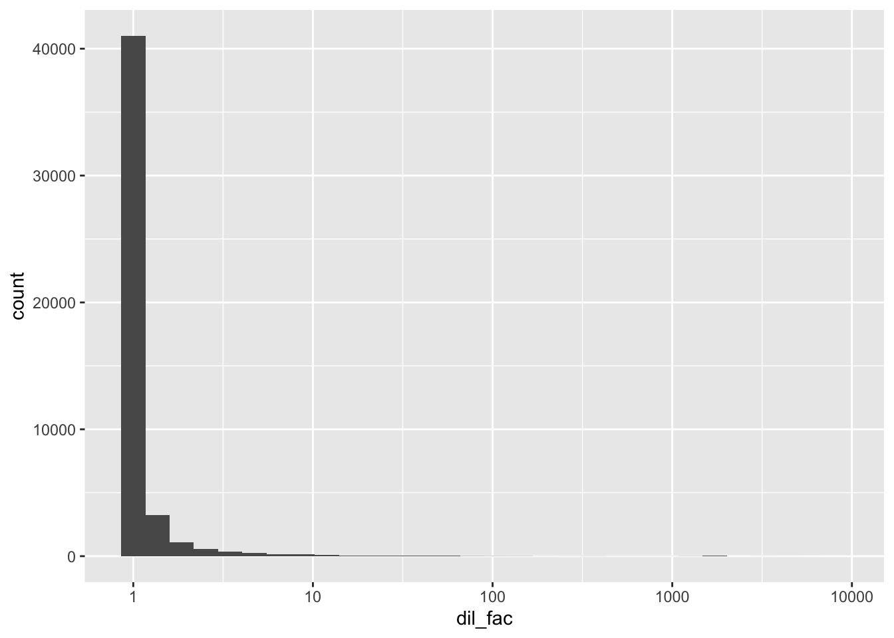
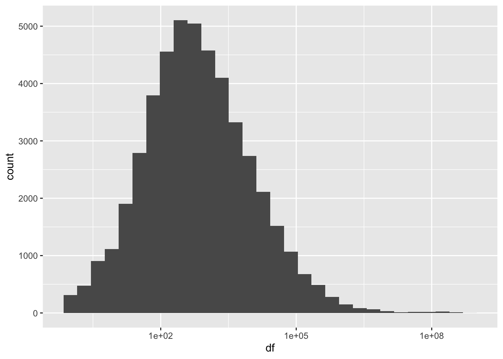
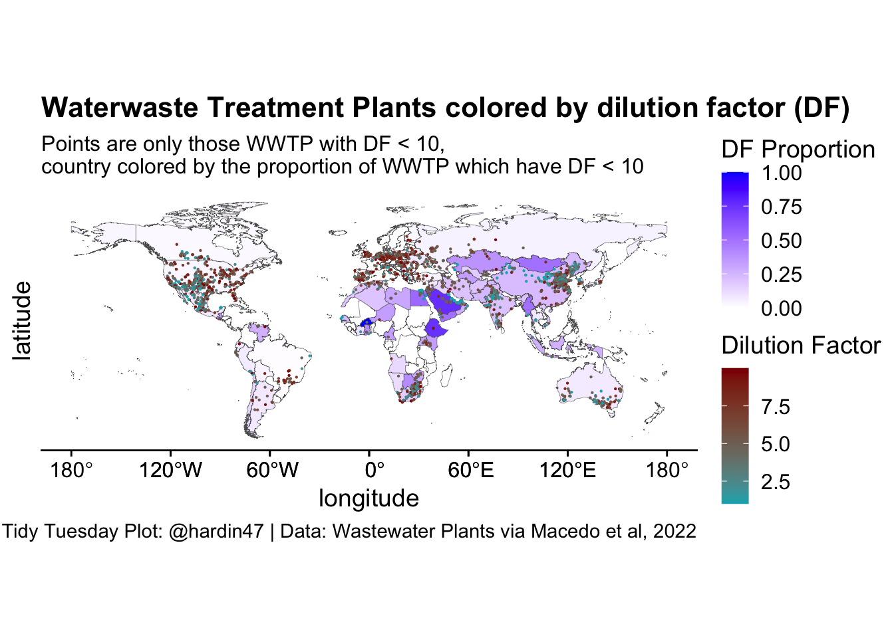

Wastewater Plants
The Data
The data this week on wastewater plants comes from Macedo et al, 2022 by way of Data is Plural.
wwtp <- read_csv("HydroWASTE_v10.csv") %>%
clean_names()Dilution factor is the ratio of concentration in the effluent to concentration in the receiving water after missing in the receiving water. (From: https://pubs.usgs.gov/sir/2011/5136/pdf/sir20115136.pdf)
\[DF = \frac{Q_p + Q_e}{Q_e}\]
where \(Q_p\) is the flow in the stream and \(Q_e\) is the flow of the effluent. I had originally thought that \(Q_p\) is measured by river_dis and \(Q_e\) is measured by waste_dis. But that ratio doesn’t give the same value as df in the dataset. In the histograms below, notice how different the scaling is.
wwtp <- wwtp %>%
mutate(dil_fac = (river_dis + waste_dis) / waste_dis)
wwtp %>%
ggplot(aes(x = dil_fac)) +
geom_histogram() +
scale_x_continuous(trans = "log10") 
wwtp %>%
ggplot(aes(x = df)) +
geom_histogram() +
scale_x_continuous(trans = "log10") 
The worst plants
The dilution factor measures the ratio of water to discharge. The lower the value, the more the water is being polluted. Where are the worst treatment plants?
world <- rnaturalearth::ne_countries(scale = "medium", returnclass = "sf") %>%
select(iso_a3, geometry)
country_df <- wwtp %>%
group_by(cntry_iso) %>%
summarize(df_extent = sum(df < 10, na.rm = TRUE) / n())
df_fill <- left_join(country_df, world, by = c("cntry_iso" = "iso_a3"))ggplot(world) +
geom_sf(data = df_fill, aes(geometry = geometry, fill = df_extent),
size = 0.1) +
geom_point(data = filter(wwtp, df < 10), size = .1,
aes(x = lon_out, y = lat_out, color = df)) +
scale_fill_gradient(low='white', high='blue') +
scale_color_gradient(low="#00AFBB", high='darkred') +
guides(fill = guide_colorbar(title.position = "top",
title = "DF Proportion"),
color = guide_colorbar(title.position = "top",
title = "Dilution Factor"))+
cowplot::theme_cowplot() +
labs(title = "Waterwaste Treatment Plants colored by dilution factor (DF)",
subtitle = "Points are only those WWTP with DF < 10, \ncountry colored by the proportion of WWTP which have DF < 10",
x = "longitude",
y = "latitude",
caption = "Tidy Tuesday Plot: @hardin47 | Data: Wastewater Plants via Macedo et al, 2022")